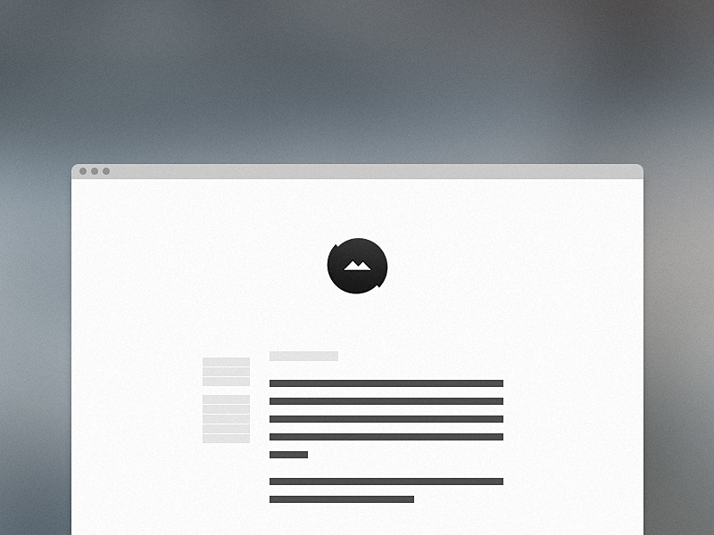

A Super Simple Start
3 min readI’m constantly learning, so this is a project I will continuously update. It’s primarily a tool to make my life easier, but you’re free to use it and modify as you wish. You can find the latest version on GitHub.
Writing code is tedious, and I found myself writing the same thing over and over again unless I used extensive frameworks like Foundation and Bootstrap. No hate, but they’re way too big for the majority of the projects I’m currently working on.
So, frustrated with that fact, I set up a starting point to kickstart all upcoming project. No styling, nothing fancy, no huge library apart from jQuery, just the things I found myself writing over and over again. It’s currently featuring a grid system, animations, retina support for images and some basic resets. And all in Sass so it’s easy to maintain!

Configuration
The HTML document is merely a basic setup, which includes jQuery, Google font imports, basic meta-tags, and FastClick to battle pesky smartphone behaviour. The fun stuff is in the Sass:
$primary: 'Source Sans Pro', sans-serif
$secondary: 'Freight Text Pro', Georgia, serif
I prefer Sass for my personal projects, and I usually start with typography - defining fonts, font-size, line-height, line-length and so on. The predefined fonts are just there to look pretty if I for some reason start with something other than typography.
$main-color: #555
$highlight-color: #4caac6
I try to use general names and not name variables “blue” and “green”. There’s always the off chance that I might change the colours of the website, and when $red = a shade of blue, I get confused. It keeps me sane.
@mixin animate($time) {
-webkit-transition: $time
-moz-transition: $time
-o-transition: $time
transition: $time
}
Usually implemented on elements with a hover effect to fade in and out. This is defined by typing:
@include animate(0.2s)
Lastly, I import the grid system and retina display support (when needed) before the main-styling of the body. This is just so the grid won’t overwrite anything I define in the main-style. Animations are included at the very end of my document. Sass is clever, so I don’t need the .scss file extension.
@import 'grid'
@import 'retina'
@import 'animations'
@keyframes fadeIn
0% {opacity: 0;}
100% {opacity: 1;}
The grid
.grid
width: 100%
.grid:after
content: ""
display: table
clear: both
[class*='col-']
float: left
padding: $padding-variable
From there you define the width of the columns you need - like .col-50 for 50% or .col-33 for 33.33%. I have the basic layouts defined already, like 100%, 50%, 25%, 20% 33% and 66%. Grids don’t have to be complex, and this one is based on Chris Coyier’s Don’t Overthink It grid, which is already fairly basic.
And that’s pretty much it. I’ve been experimenting with looping Sass arguments for the grid system, but at the moment it added more code than needed and bloated my code.
This website was built on top of this “framework”. If you have any questions, feel free to ask or do the GitHub thing.